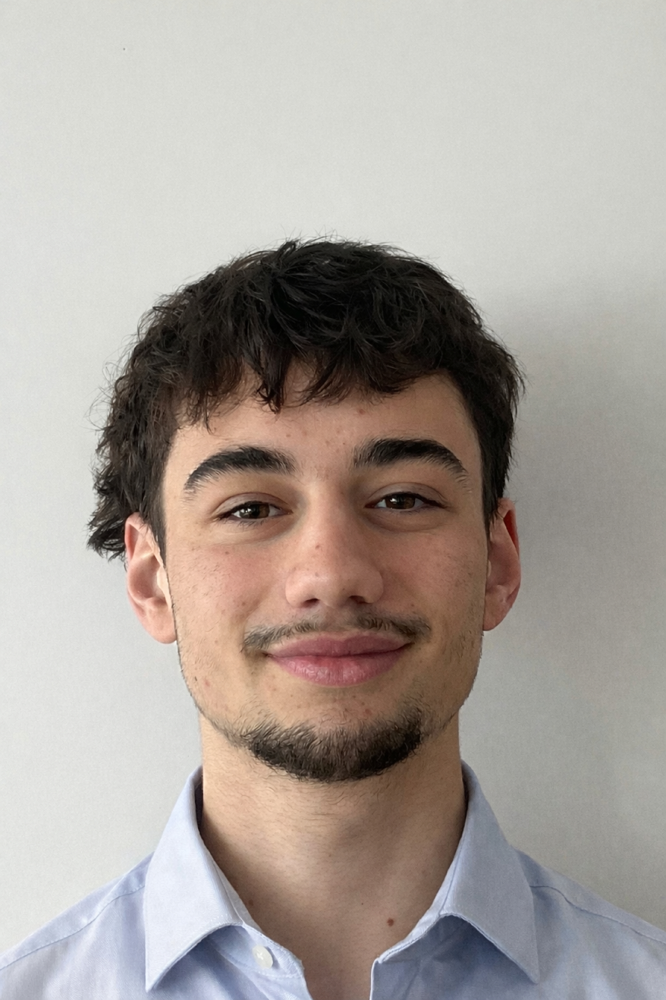

Maxence Sallé-Pierret
< Etudiant en informatique / BUT 2 >
Animé·e par la curiosité et la rigueur, je mets un point d’honneur à transformer la théorie en réalisations concrètes. Qu’il s’agisse de coder des applications web, de développer des scripts d’automatisation ou de prototyper des projets open source, je saisis chaque occasion pour enrichir mon savoir-faire et mes compétences en architecture logicielle.
Parcours Académique
🎓 BUT Informatique
2024 - 2027 | IUT d'Orsay, Paris-SaclayFormation complète couvrant le développement logiciel, les bases de données, les réseaux et la gestion de projet.
🎒 Baccalauréat Général
Obtenu en 2023 | Lycée Emily Brontë, LognesSpécialités Mathématiques, Physique-Chimie et Sciences de la Vie et de la Terre (SVT).
Expériences Pro
🍔 McDonald's
10/2023 - Actuel | MassyÉquipier polyvalent
Travail le week-end en parallèle de mes études. Gestion du stress et travail en équipe.
☕ Il Cappuccino
07/2024 - 08/2024 | Gournay-Sur-MarneServeur
Service en salle, gestion des commandes et excellente relation client.
🥐 O'pitchoun
06/2023 - 08/2023 | SaultServeur
Travail saisonnier nécessitant rigueur et dynamisme dans un environnement rapide.
Centres d'intérêt
🎾 Tennis
Pratiqué avec passion depuis 12 ans. Je joue actuellement en club et participe régulièrement à des compétitions.
🧗 Sport Extérieur
Pratique régulière de l'escalade et de la course à pied pour me dépenser, relever des défis et me dépasser.
🎮 Loisirs & Tech
J'adore sortir avec mes amis et je passe également du temps à jouer aux jeux vidéo, ce qui nourrit mon intérêt pour l'informatique.